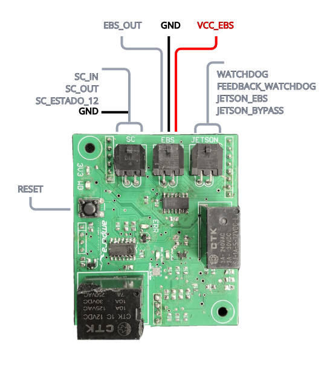
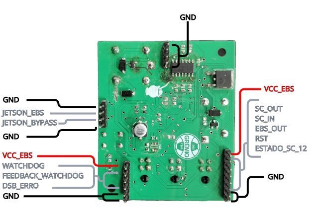

Driverless System Brake (DSB)
The DSB is the board that decides, independently of the Jetson, when the brake should be triggered. It receives watchdog and error signals from the computing unit, combines them with the state of the Shutdown Circuit, and uses that logic to drive two relays: one that opens the SDC itself, and another that energizes the EBS output. The DSB board plugs into the Backplane through two headers — J1 and J5 — and exposes three local Micro-Fit connectors (JETSON, EBS, SC) plus a 4-pin test header (J4) mirroring the Jetson signals.
Logic description
The EBS-open decision is built from three OR/AND stages, each feeding the next.
1. Jetson failure detection
NOT_ERRO_JETSON = WATCHDOG OR JETSON_BYPASS
This output drives MOSFET Q1, which pulls the ERRO_JETSON line to GND when active. Since ERRO_JETSON is pulled high by default (R6 to 3V3), the resulting truth table is:
| WATCHDOG | JETSON_BYPASS | NOT_ERRO_JETSON | Q1 | ERRO_JETSON |
|---|---|---|---|---|
| 1 (pulsing) | X | 1 | ON | 0 (no error) |
| 0 (stopped) | 1 (bypass active) | 1 | ON | 0 (no error) |
| 0 (stopped) | 0 | 0 | OFF | 1 (error) |
ERRO_JETSON only goes high (error condition) if the watchdog stops pulsing and bypass is not enabled. This is the fail-safe default state — if nothing is connected or the Jetson hangs, the circuit assumes an error.
2. EBS-open request
ABRIR_EBS = JETSON_EBS OR ESTADO_SC
Combines an explicit request from the Jetson (JETSON_EBS) with the Shutdown Circuit state (ESTADO_SC) — the EBS opens if the Jetson asks directly, or if the SDC state calls for it.
3. Final decision
EBS = ERRO_JETSON OR ABRIR_EBS
Drives Q2 → relay K2 → EBS_OUT. It goes high if any of the upstream conditions is active: watchdog stopped with no bypass, Jetson requesting an open, or the SDC state calling for it.
Combined expression:
EBS = (WATCHDOG' · JETSON_BYPASS') + JETSON_EBS + ESTADO_SC
In short: the autonomous brake opens if the Jetson stops responding (with no bypass active), or if the Jetson requests an open directly, or if the Shutdown Circuit state indicates an open — any one of these three conditions is sufficient on its own.


Inputs
| Group | Signal | Description |
|---|---|---|
| Power | VCC_EBS |
Main supply, protected by onboard eFuse (IC2); feeds regulator (U2) and the rest of the board |
| Power | GND |
Ground |
| Shutdown Circuit | SC_in |
SDC signal from the Backplane (originally from the RES) |
| Reset | RST |
Board reset, tied to the reset pin of flip-flop U1 and reset button S1 |
Watchdog (JETSON connector) |
WATCHDOG |
Watchdog pulse train from the computing unit |
Watchdog (JETSON connector) |
JETSON_BYPASS |
Bypass command from the Jetson |
Watchdog (JETSON connector) |
JETSON_EBS |
Direct EBS-open command from the Jetson |
Outputs
| Group | Signal | Description |
|---|---|---|
| Shutdown Circuit | SC_out |
SDC signal after passing through the DSB; forwarded to the Backplane (then to the AMPSEAL) |
| EBS command | EBS_OUT |
12 V switched onto this line when the combinational logic decides the brake should open; sent to the Backplane/AMPSEAL and to the local EBS connector for an external actuator |
| Status (to Backplane) | DSB_ERRO |
General error flag |
| Status (to Backplane) | ESTADO_SC_12 |
State of the SDC loop as seen locally |
| Status (to Backplane) | FEEDBACK_WATCHDOG |
Watchdog feedback sent back to the Jetson |
| Indicator LEDs (onboard only) | 3V3 |
Indicator LED |
| Indicator LEDs (onboard only) | WD |
Indicator LED |
| Indicator LEDs (onboard only) | ERR |
Indicator LED |
| Indicator LEDs (onboard only) | ERR_JETSON |
Indicator LED |
| Indicator LEDs (onboard only) | OPEN_EBS |
Indicator LED |